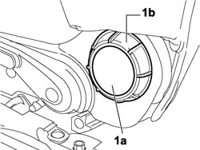
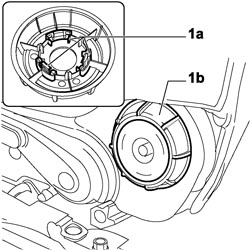
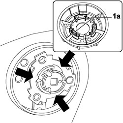

7045A24 FRONT SEAT BACKREST ANGLE ADJUSTMENT KNOB (ONE), LEFT OR RIGHT - R.R.
- Path
- Procedures > 70 FITTINGS > 7045 FRONT SEATS > 7045A FRONT SEAT ASSEMBLY > 7045A24 FRONT SEAT BACKREST ANGLE ADJUSTMENT KNOB (ONE), LEFT OR RIGHT - R.R.
- Kind
- repair procedure (removal / refitting; the operation number is the code)
- Applies to
- all engines; all production periods
- Interactive page
- https://sloeber94.github.io/elrnDB-fCrm/en/#/194001088
Applies to: all engines; all production periods
 Removing
Removing
 Refitting
Refitting1. Release the cover (1a) from the knob (1b).

Applies to: all engines; all production periods
1. Using the internal retaining clips (1a) release the knob (1b) from its housing.

Applies to: all engines; all production periods
Refitting
Removing1. Fit the knob (1a) positioning the retaining clips (1b) at the points shown by the arrows.

Applies to: all engines; all production periods
- Fit the cover on the knob.
Topics that link to this page (14)
- O015 FRONT SEAT BACKREST ADJUSTMENT HARDENING
- S068 BACKREST ADJUSTMENT NOISE
- 7045A34 MANUAL DEVICE FOR ADJUSTING DRIVER'S SEAT HEIGHT - R.R. WITH SEAT REMOVED
- 7045A36 DRIVER'S SEAT MANUAL HEIGHT ADJUSTMENT DEVICE - R.R
- 7045A43 FRONT SEAT EXTERIOR GUARD (ONE), LEFT OR RIGHT - R.R
- 7045A55 MANUAL DEVICE TO ADJUST FRONT SEAT ANGLE - R.R.
- 7045A59 FRONT SEAT BACK INCLINATION ADJUSTING DEVICE (ONE), LH OR RH - R R
- 7045A86 FRONT SEAT FRAME (ONE), LEFT OR RIGHT, R.R.
- 7045D10 TRIM FOR ONE FRONT SEAT LH OR RH - R.R
- 7045D11 TRIM OF ONE FRONT SEAT LH OR RH RR WITH SEAT REMOVED
- 7045D18 FRONT SEAT CUSHION SPRINGING (ONE), LH OR RH - R R
- 7045D20 FRONT SEAT CUSHION COVER, LEFT OR RIGHT - R.R.
- 7045D21 FRONT SEAT CUSHION COVER, LEFT OR RIGHT - R.R. WITH SEAT REMOVED
- 7045M22 HEATER PAD FOR FRONT SEAT CUSHION, LEFT OR RIGHT - R.R. FOLLOWING ELECTRICAL CIRCUIT CHECK